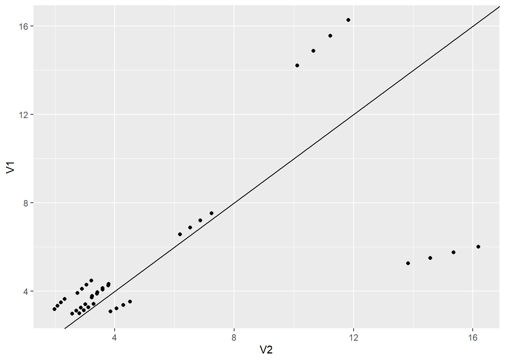

library(tidyverse)
library(robustbase) # contains data we'll use
library(ggplot2)
library(vcdExtra)
library(magrittr)
library(MASS)
library(lme4) # access the mixed functions7 Mixed Effects
In this lab we’ll look at some simulated data that provide a nice demonstration of the interpretation problem presented by generalized linear mixed modeling. We’ll also go through another example of fitting a Generalized Linear Mixed Model (GLMM) and making sense of the output.
To start off, please load these libraries that you’ll need for this lab. Please note that robustbase is new, so you will likely have to install it first.
Simulation of Machine Defects
Let’s suppose that we have 10 machines producing a product and that we record the number of defective items that each machine produces at four different times (times 1, 2, 3, 4). In this scenario, we might reasonably expect there to be similarities in numbers of defects for the same machine and differences in numbers of defects from different machines. In this way, thinking of machine as a grouping variable, we would include it in an analysis as a random effect. The response (number of defects) is a count, and in this simulation, we’ll use the Poisson distribution to generate the numbers of defects.
We’ll simulate data from a Poisson model, and use a mixed effects Poisson regression model (a particular kind of GLMM) to fit the data and demonstrate a few things. We’ll also fit a linear mixed effects model so we can demonstrate the important difference between GLMM and LMM in terms of the interpretation of fixed effects.
set.seed(090901) ## set seed so we all get the same results
Machine <- as.factor(rep(1:10, rep(4, 10))) # 10 machines, each with 4 defect counts
Time <- rep(1:4, 10) # Time variable: 1,2,3,4 for each Machine
RE <- rnorm(10, 0, 2) # generate 10 random effects, one for each Machine
# random effect variance is 4.
eta <- rep(RE, rep(4, 10)) # replicate the random effects four times for each Machine
# See what we have so far:
cbind(Machine, Time, eta)[1:12, ] Machine Time eta
[1,] 1 1 -1.9025790
[2,] 1 2 -1.9025790
[3,] 1 3 -1.9025790
[4,] 1 4 -1.9025790
[5,] 2 1 4.9604863
[6,] 2 2 4.9604863
[7,] 2 3 4.9604863
[8,] 2 4 4.9604863
[9,] 3 1 -0.3009368
[10,] 3 2 -0.3009368
[11,] 3 3 -0.3009368
[12,] 3 4 -0.3009368The R output above shows the data for the first three machines. Each machine has four time points and one random effect that remains the same for each time point. Now let’s simulate defects from a mixed effects Poisson regression model where the true coefficient for time is 1.1 when \(\lambda\) is on the log scale.
set.seed(100233)
llambda <- 1.1 * Time + eta # lambda on the log scale
lambda <- exp(llambda)
Defects <- rpois(40, lambda)
Simu_dat <- data.frame(Machine,Time,eta,Defects)
head(Simu_dat)| Machine | Time | eta | Defects |
|---|---|---|---|
| 1 | 1 | -1.902579 | 0 |
| 1 | 2 | -1.902579 | 1 |
| 1 | 3 | -1.902579 | 3 |
| 1 | 4 | -1.902579 | 10 |
| 2 | 1 | 4.960486 | 407 |
| 2 | 2 | 4.960486 | 1233 |
Now, let’s take a look at the data, on the data scale:
ggplot(data = Simu_dat, aes(Time, Defects, group=Machine)) + geom_point() + geom_line()
It’s actually difficult to visualize the data on the data scale because there’s one machine with a lot of defects, and so all the defects for the other machines are squashed down below about 1000 on the y-axis. Let’s recreate the plot using the log of the defects.
ggplot(data = Simu_dat, aes(Time, log(Defects+0.1), group=Machine)) + geom_point() + geom_line()Now, let’s fit a GLMM to the simulated data and after that we’ll generate a plot of the results.
sim1 <- glmer(Defects ~ Time + (1|Machine),
data = Simu_dat, family = poisson)
summary(sim1)Generalized linear mixed model fit by maximum likelihood (Laplace
Approximation) [glmerMod]
Family: poisson ( log )
Formula: Defects ~ Time + (1 | Machine)
Data: Simu_dat
AIC BIC logLik deviance df.resid
305.4 310.4 -149.7 299.4 37
Scaled residuals:
Min 1Q Median 3Q Max
-1.6119 -0.6806 -0.1589 0.4385 2.6663
Random effects:
Groups Name Variance Std.Dev.
Machine (Intercept) 3.673 1.916
Number of obs: 40, groups: Machine, 10
Fixed effects:
Estimate Std. Error z value Pr(>|z|)
(Intercept) 0.17030 0.60862 0.28 0.78
Time 1.10981 0.01003 110.67 <2e-16 ***
---
Signif. codes: 0 '***' 0.001 '**' 0.01 '*' 0.05 '.' 0.1 ' ' 1
Correlation of Fixed Effects:
(Intr)
Time -0.059Remember that we simulated these data with \(\beta_0 = 0\), \(\beta_1 = 1.1\) and the random effect variance, \(\sigma^2_{\eta} = 4\). The model summary gives \(\hat{\beta}_0 = 0.17 (0.61)\); \(\hat{\beta}_1 = 1.11 (0.01)\) and \(\hat{\sigma}^2_{\eta} = 3.67\) The numbers in parentheses after the fixed effect estimates are the standard errors corresponding to those estimates. The GLMM does a very good job of estimating the the parameters, which should not be all that surprising since this is a relatively simple simulation.
The bigger take-away is still to come. Now, we’ll plot the fitted model.
Simu_dat$fits <- predict(sim1)
ggplot(Simu_dat,aes(Time,log(Defects+0.1),by=Machine)) + geom_point() + geom_line(aes(Time,fits))
This plot shows the fitted model for each Machine. Let’s now add the line that we obtain from just the fixed effects estimates.
ggplot(Simu_dat,aes(Time,log(Defects+0.1),by=Machine)) + geom_point() + geom_line(aes(Time,fits)) + geom_abline(intercept = 0.17, slope = 1.11,color = "red",linewidth=1.5)This all looks OK – the fitted line from just the fixed effect estimates (red, thicker line) certainly looks like the average of the fitted lines for all of the machines.
If you are content to describe the results on the model scale, in this case in terms of log(Defects), then you can interpret the fixed effects estimates without first conditioning on the random effects.
What if we look at this plot back on the data scale, however?
ggplot(Simu_dat,aes(Time,Defects,by=Machine)) + geom_point() + geom_line(aes(Time,exp(fits))) + geom_line(aes(x =Time,y=exp(0.17+1.11*Time)),color="red",linewidth=1.5)
Now, back on the data scale, we see the problem – the fixed effects estimates by themselves do not well-represent everything that these data contain. The one machine that has unusually high numbers of defects is not at all well-represented by the thick, red line. If you were to communicate the results using the fixed effects estimates only, you would miss a major part of this story: there’s a big problem with one of the machines!
Let’s dig a little deeper still. What if we remove that one machine with the large number of defects from the plot above?
tapply(Simu_dat$Defects,Simu_dat$Machine,sum) 1 2 3 4 5 6 7 8 9 10
14 17016 80 100 136 17 209 50 183 604 It’s Machine 2 that has all the problems.
ggplot(subset(Simu_dat,Machine!=2),aes(Time,Defects,by=Machine)) + geom_point() + geom_line(aes(Time,exp(fits))) + geom_line(aes(x =Time,y=exp(0.17+1.11*Time)),color="red",size=1.5)Warning: Using `size` aesthetic for lines was deprecated in ggplot2 3.4.0.
ℹ Please use `linewidth` instead.Even among the remaining machines, you can see that the fixed effect estimates do not really represent what’s going on here – there remains another machine that in particular doesn’t look like the others in terms of numbers of defects.
Even though these are simulated data, you can see that in this particular case, the interesting answer isn’t about the fixed effects estimates, it’s about the identification of one Machine (maybe more!) that has an unusual number of defects relative to the others.
There’s a good display in Agresti, Figure 13.1 on page 496, that provides another demonstration of how the fixed effect estimates from the GLMM does not well-represent all the structure in the data.
Because of the presence of the random effect, and the non-linearity of the model on the data scale, the results from GLMM must be interpreted conditionally upon the random effects.
Epilepsy Example
Now that we’ve examined some simulated data, let’s look at some real data to see how GLMM can be applied to actual data. The epilepsy data set contains information on the number of epilepsy attacks patients had during four follow-up periods post-treatment. Each patient received either an experimental anti-seizure treatment or a placebo, and for each patient additional information – baseline number of epilepsy attacks in the 8 weeks prior to randomization and age – is also included. The question of interest here is whether the treatment, a drug called progabide, reduced the number of seizures.
Let’s start by taking a look at the data and its help file.
# ?epilepsy
data(epilepsy)
head(epilepsy)| ID | Y1 | Y2 | Y3 | Y4 | Base | Age | Trt | Ysum | Age10 | Base4 |
|---|---|---|---|---|---|---|---|---|---|---|
| 104 | 5 | 3 | 3 | 3 | 11 | 31 | placebo | 14 | 3.1 | 2.75 |
| 106 | 3 | 5 | 3 | 3 | 11 | 30 | placebo | 14 | 3.0 | 2.75 |
| 107 | 2 | 4 | 0 | 5 | 6 | 25 | placebo | 11 | 2.5 | 1.50 |
| 114 | 4 | 4 | 1 | 4 | 8 | 36 | placebo | 13 | 3.6 | 2.00 |
| 116 | 7 | 18 | 9 | 21 | 66 | 22 | placebo | 55 | 2.2 | 16.50 |
| 118 | 5 | 2 | 8 | 7 | 27 | 29 | placebo | 22 | 2.9 | 6.75 |
xtabs(formula=~Trt,data=epilepsy)Trt
placebo progabide
28 31 The variable Ysum contains the cumulative sum of epilepsy attacks beginning at the treatment period to the end of the 8-week study while the variable Base contains the total epilepsy attacks in the 8 weeks prior to treatment. We might first investigate if the average number of seizures per week after treatment is related to the average number of seizures per week prior to treatment.
ggplot(data=epilepsy) +
geom_point(aes(x = Base / 8, Ysum / 8)) +
xlab("Seizures per Week before Treatment") +
ylab("Seizures per Week after Treatment") + facet_wrap(~Trt) +
geom_abline(slope = 1,intercept = 0) ## reference line
From these plots, there does seem to be a relationship between average number of seizures before and after treatment though it’s somewhat difficult to see everything we might want to see because much of the data are clumped at low numbers of seizures. Let’s try plotting the data on the log-log scale, adding a small number to each of the counts to avoid the log(0) problem.
ggplot(data=epilepsy) +
geom_point(aes(x = log(Base+0.1), y = log(Ysum+0.1))) +
xlab("Seizures per Week before Treatment (log scale)") +
ylab("Seizures per Week after Treatment (log scale)") +
facet_wrap(~Trt) +
geom_abline(slope = 1,intercept = 0)It certainly seems as though patients who have a lot of seizures before treatment also have a lot of them after treatment, regardless of whether they actually receive the treatment or the placebo.
There are any number of things we might do next. For example, we can also look at a table of improvements to see what proportion of patients on the placebo improved after the treatment period and what proportion of patients on the treatment improved after the treatment period.
epilepsy$improvement <- ifelse(epilepsy$Ysum/8 < epilepsy$Base/8,
"improved","didn't")
xtabs(formula=~Trt+improvement, data=epilepsy) improvement
Trt didn't improved
placebo 16 12
progabide 10 21So 12/28 or 43% improved on placebo, whereas 21/31 or 68% improved on progabide. Let’s look at odds of improvement.
success = c(12, 21) ## number who improved on the placebo, progabide
fail = c(16, 10) ## number who did not improve on the placebo, progabide
resp = cbind(success, fail)
trt = c(0, 1) ## coding 0 as the placebo group, 1 as progabide
out = glm(resp ~ trt, family=binomial) ## simple GLM
summary(out)
Call:
glm(formula = resp ~ trt, family = binomial)
Coefficients:
Estimate Std. Error z value Pr(>|z|)
(Intercept) -0.2877 0.3819 -0.753 0.4513
trt 1.0296 0.5417 1.901 0.0573 .
---
Signif. codes: 0 '***' 0.001 '**' 0.01 '*' 0.05 '.' 0.1 ' ' 1
(Dispersion parameter for binomial family taken to be 1)
Null deviance: 3.7305e+00 on 1 degrees of freedom
Residual deviance: 8.8818e-16 on 0 degrees of freedom
AIC: 11.552
Number of Fisher Scoring iterations: 31-pchisq(3.73, 1)[1] 0.05344339With a p-value of 0.05344, there is moderate to weak evidence of a treatment effect. The odds of improvement on progabide are estimated to be 2.8 times the odds of improvement on placebo.
However, notice that so far, we have disregarded a lot of the information here (Age of patient and during which of the time periods the seizures occurred). If the researcher’s question of interest is only in reducing the total number of seizures in the 8-week follow-up period, then perhaps one of the methods above would suffice. The structure of the experiment, however, with repeated measurements per subject, suggests that we might also learn something about the progression of seizures over the eight week post-treatment period. For this, we’ll turn to a GLMM using subject as the random effect.
We first have to gather all of the responses, Y1, Y2, Y3, and Y4, together into one column (called Seizures), and add a new column (Visit) to keep track of which seizure counts correspond to which visits, post-treatment. Then we’ll be able to look at plots of the counts across time.
epil_long <- pivot_longer(epilepsy, c(Y1, Y2, Y3, Y4), names_to="Visit", values_to="Seizures")
epil_long %<>% arrange(.,ID) # sort by patient ID
epil_long %<>% mutate(.,ID = as.factor(ID),Visit = rep(1:4,59))
# change ID to factor and Visit to numeric
head(epil_long)| ID | Base | Age | Trt | Ysum | Age10 | Base4 | improvement | Visit | Seizures |
|---|---|---|---|---|---|---|---|---|---|
| 101 | 76 | 18 | progabide | 42 | 1.8 | 19.0 | improved | 1 | 11 |
| 101 | 76 | 18 | progabide | 42 | 1.8 | 19.0 | improved | 2 | 14 |
| 101 | 76 | 18 | progabide | 42 | 1.8 | 19.0 | improved | 3 | 9 |
| 101 | 76 | 18 | progabide | 42 | 1.8 | 19.0 | improved | 4 | 8 |
| 102 | 38 | 32 | progabide | 28 | 3.2 | 9.5 | improved | 1 | 8 |
| 102 | 38 | 32 | progabide | 28 | 3.2 | 9.5 | improved | 2 | 7 |
ggplot(epil_long,aes(Visit,Seizures,by=ID)) + geom_line() + facet_wrap(~Trt)Well, these look a little bit like spaghetti. Let’s check on the log scale.
ggplot(epil_long,aes(Visit,log(Seizures+0.1),by=ID)) + geom_line() + facet_wrap(~Trt)Still spaghetti, but at least we can see a couple of things:
It’s not clear that progabide is generally better, and for one patient it’s particularly bad (though we should check the baseline number of seizures for that patient).
It’s not clear that there are differences in seizure numbers through time on either medication (although it’s a little hard to tell when some of the counts jump down to zero).
Just to make a thorough examination of the data, let’s check for any differences in the Ages or in the Baseline numbers of seizures between the two groups. This was a randomized study, so there shouldn’t be differences in these covariates (i.e., the randomization should balance these out), but it never hurts to check.
ggplot(data = epilepsy, aes(x = Trt, y = Base)) + geom_jitter(width=.01)ggplot(data = epilepsy, aes(x = Trt, y = Age)) + geom_jitter(width=.01)
There’s not really any evidence that age or baseline number of attacks differ between the placebo and progabide group. There is one subject in the progabide group with an unusually high number of seizures at baseline – you can check to see if this is the same patient with the unusually high number after treatment.
Let’s fit a GLMM and see if our visual inspections are validated.
mod1 <- glmer(Seizures ~ Trt + Base + Age + Visit +
(1|ID), family = poisson, data = epil_long)
summary(mod1)Generalized linear mixed model fit by maximum likelihood (Laplace
Approximation) [glmerMod]
Family: poisson ( log )
Formula: Seizures ~ Trt + Base + Age + Visit + (1 | ID)
Data: epil_long
AIC BIC logLik deviance df.resid
1349.2 1370.0 -668.6 1337.2 230
Scaled residuals:
Min 1Q Median 3Q Max
-3.2867 -0.8240 -0.1332 0.5549 7.2848
Random effects:
Groups Name Variance Std.Dev.
ID (Intercept) 0.2856 0.5344
Number of obs: 236, groups: ID, 59
Fixed effects:
Estimate Std. Error z value Pr(>|z|)
(Intercept) 0.666765 0.410081 1.626 0.10396
Trtprogabide -0.261043 0.154119 -1.694 0.09031 .
Base 0.027235 0.002799 9.731 < 2e-16 ***
Age 0.014254 0.012548 1.136 0.25597
Visit -0.058725 0.020178 -2.910 0.00361 **
---
Signif. codes: 0 '***' 0.001 '**' 0.01 '*' 0.05 '.' 0.1 ' ' 1
Correlation of Fixed Effects:
(Intr) Trtprg Base Age
Trtprogabid -0.289
Base -0.392 -0.006
Age -0.931 0.114 0.190
Visit -0.119 0.000 0.000 0.000Picking the Random Effects
In the model we just fit, we used a random intercepts model that just includes a random effect for patient. Specifically what this means that is the intercept term will be estimated differently for each patient.
Depending on the particular problem, this may or may not be a reasonable way to think about the variation in the data. In the context of this epilepsy example, it could be that the different patients show different rates of change in their numbers of seizures – this would suggest that each patient have his or her own effect of visit. We can accomplish this by putting in a random effect for visit.
Next we’ll fit a random intercepts and slopes model with Visit as the random slope. Again, this seems like a reasonable thing to do if we expect that some subjects will have a different rate of increase or decrease of number of seizures over time than other subjects.
mod2 <- glmer(Seizures ~ Trt + Base + Age + Visit + (1 + Visit|ID), family = poisson, data = epil_long)Warning in checkConv(attr(opt, "derivs"), opt$par, ctrl = control$checkConv, :
Model failed to converge with max|grad| = 0.00368596 (tol = 0.002, component 1)# oops this didn't converge --- try the initialization trick again:
(init <- getME(mod2, name = c("theta", "fixef")))$theta
ID.(Intercept) ID.Visit.(Intercept) ID.Visit
0.60038496 -0.06873505 0.12686483
$fixef
(Intercept) Trtprogabide Base Age Visit
0.61274912 -0.25315623 0.02736649 0.01545712 -0.05904358 mod2 <- glmer(Seizures ~ Trt + Base + Age + Visit + (1 + Visit|ID), family = poisson, data = epil_long, start = init)
summary(mod2)Generalized linear mixed model fit by maximum likelihood (Laplace
Approximation) [glmerMod]
Family: poisson ( log )
Formula: Seizures ~ Trt + Base + Age + Visit + (1 + Visit | ID)
Data: epil_long
AIC BIC logLik deviance df.resid
1333.1 1360.8 -658.5 1317.1 228
Scaled residuals:
Min 1Q Median 3Q Max
-2.9215 -0.7439 -0.0919 0.5534 6.3674
Random effects:
Groups Name Variance Std.Dev. Corr
ID (Intercept) 0.36044 0.6004
Visit 0.02082 0.1443 -0.48
Number of obs: 236, groups: ID, 59
Fixed effects:
Estimate Std. Error z value Pr(>|z|)
(Intercept) 0.61284 0.41536 1.475 0.1401
Trtprogabide -0.25314 0.15324 -1.652 0.0986 .
Base 0.02737 0.00278 9.843 <2e-16 ***
Age 0.01545 0.01273 1.214 0.2247
Visit -0.05904 0.03252 -1.816 0.0694 .
---
Signif. codes: 0 '***' 0.001 '**' 0.01 '*' 0.05 '.' 0.1 ' ' 1
Correlation of Fixed Effects:
(Intr) Trtprg Base Age
Trtprogabid -0.290
Base -0.398 -0.003
Age -0.923 0.122 0.198
Visit -0.128 -0.018 0.009 -0.056The estimated variance for the Visit random effect is pretty small (0.02), but the fixed effect estimate for Visit is pretty small too (-0.06), so that random effect variance may still be important to consider. Remember that we can compare the two models with the AIC and BIC functions:
AIC(mod1, mod2)| df | AIC | |
|---|---|---|
| mod1 | 6 | 1349.228 |
| mod2 | 8 | 1333.084 |
BIC(mod1, mod2)| df | BIC | |
|---|---|---|
| mod1 | 6 | 1370.011 |
| mod2 | 8 | 1360.794 |
Both criteria indicate that the model with random slopes for Visit is somewhat preferred over the model with only random intercepts, though simplicity and that the AIC and BIC are not very different (i.e., each for mod1 vs mod2) would argue for using the model with only one random effect. As mentioned in last lab, in a real problem situation, we really want to think more carefully about what the model should be before fitting anything to the data. Choosing which model after fitting many models is a type of data snooping and should generally be avoided.
Looking at the results
Let’s go back to the random intercept only model and interpret/understand the model output. This model is already a bit complex but is somewhat simpler than the random intercepts and random slopes model (mod2).
summary(mod1)Generalized linear mixed model fit by maximum likelihood (Laplace
Approximation) [glmerMod]
Family: poisson ( log )
Formula: Seizures ~ Trt + Base + Age + Visit + (1 | ID)
Data: epil_long
AIC BIC logLik deviance df.resid
1349.2 1370.0 -668.6 1337.2 230
Scaled residuals:
Min 1Q Median 3Q Max
-3.2867 -0.8240 -0.1332 0.5549 7.2848
Random effects:
Groups Name Variance Std.Dev.
ID (Intercept) 0.2856 0.5344
Number of obs: 236, groups: ID, 59
Fixed effects:
Estimate Std. Error z value Pr(>|z|)
(Intercept) 0.666765 0.410081 1.626 0.10396
Trtprogabide -0.261043 0.154119 -1.694 0.09031 .
Base 0.027235 0.002799 9.731 < 2e-16 ***
Age 0.014254 0.012548 1.136 0.25597
Visit -0.058725 0.020178 -2.910 0.00361 **
---
Signif. codes: 0 '***' 0.001 '**' 0.01 '*' 0.05 '.' 0.1 ' ' 1
Correlation of Fixed Effects:
(Intr) Trtprg Base Age
Trtprogabid -0.289
Base -0.392 -0.006
Age -0.931 0.114 0.190
Visit -0.119 0.000 0.000 0.000Before we comment on the model summary information, let’s perform some diagnostics to see if we feel like we have a good model to work with.
Residual Diagnostics
Let’s also take a look at some residual plots.
epil_long$resid <- residuals(mod1)
epil_long$fits <- exp(predict(mod1))
# first some plots of the residuals vs. explanatory variables
ggplot(epil_long,aes(Visit,resid)) + geom_point() + facet_wrap(~Trt)ggplot(epil_long,aes(Base,resid)) + geom_point() + facet_wrap(~Trt)
ggplot(epil_long,aes(Age,resid)) + geom_point() + facet_wrap(~Trt)# now a look at the normality of the random effects
qqnorm(unlist((ranef(mod1)$ID)))
qqline(unlist((ranef(mod1)$ID)))# finally, fitted values versus observations
ggplot(epil_long,aes(Seizures,fits)) + geom_point() + facet_wrap(~Trt) + geom_abline()ggplot(epil_long,aes(log(Seizures+0.1),log(fits+0.1))) + geom_point() + facet_wrap(~Trt) + geom_abline()There are a number of things to discuss based on these plots:
It looks like there’s evidence of some curvilinearity in the relationship between
VisitandSeizures; the nature of that curvilinearity might be different for the two treatment groups (look at plot ofresidversusVisit). You could addVisit2term, the square ofVisit, or you could revertVisitback to a factor variable.There is what appears to be one large outlier in the placebo group. If we had access to the original researchers, we might have been able to find out about that unusual value.
It seems that the random effects are not strictly Normal, especially in the upper tail. This may be because we haven’t gotten the fixed effects part of the model correctly specified.
There are some zeroes among the
Seizurevalues, and the model is not fitting those very well – we may need to think about a zero-inflated model and/or a model for over dispersion.
More Model Fitting
There is a glmer.nb() function in the lme4 package, so we’ll try using that below. There are zero-inflated GLMM models, but they get rather complicated. We’ll leave it to you to explore those if you’re interested. Also, you might want to investigate what happens when you put terms in the model for the square of Visit and the interactions between Trt and the Visit variables (i.e., Visit and it’s square). Again, we’ll leave this to you for further exploration.
# first, glmer.nb with the same form as above
mod3 <- glmer.nb(Seizures ~ Trt + Age + Base + Visit + (1|ID), data = epil_long)Warning in checkConv(attr(opt, "derivs"), opt$par, ctrl = control$checkConv, :
Model failed to converge with max|grad| = 0.0181557 (tol = 0.002, component 1)init <- getME(mod3,name=c("theta","fixef"))
mod3 <- glmer.nb(Seizures ~ Trt + Age + Base + Visit + (1|ID), data = epil_long, start = init)Warning in checkConv(attr(opt, "derivs"), opt$par, ctrl = control$checkConv, :
Model failed to converge with max|grad| = 0.00295742 (tol = 0.002, component 1)summary(mod3)Generalized linear mixed model fit by maximum likelihood (Laplace
Approximation) [glmerMod]
Family: Negative Binomial(7.4718) ( log )
Formula: Seizures ~ Trt + Age + Base + Visit + (1 | ID)
Data: epil_long
AIC BIC logLik deviance df.resid
1269.2 1293.4 -627.6 1255.2 229
Scaled residuals:
Min 1Q Median 3Q Max
-1.9219 -0.6026 -0.1096 0.4506 3.6929
Random effects:
Groups Name Variance Std.Dev.
ID (Intercept) 0.2522 0.5021
Number of obs: 236, groups: ID, 59
Fixed effects:
Estimate Std. Error z value Pr(>|z|)
(Intercept) 0.662022 0.416600 1.589 0.1120
Trtprogabide -0.260516 0.154359 -1.688 0.0915 .
Age 0.014057 0.012567 1.119 0.2633
Base 0.027184 0.002806 9.687 <2e-16 ***
Visit -0.052231 0.033086 -1.579 0.1144
---
Signif. codes: 0 '***' 0.001 '**' 0.01 '*' 0.05 '.' 0.1 ' ' 1
Correlation of Fixed Effects:
(Intr) Trtprg Age Base
Trtprogabid -0.286
Age -0.919 0.115
Base -0.387 -0.006 0.189
Visit -0.205 0.004 0.010 0.001Let’s compare this model to the Poisson GLMM above (mod1):
AIC(mod1,mod3)| df | AIC | |
|---|---|---|
| mod1 | 6 | 1349.228 |
| mod3 | 7 | 1269.198 |
BIC(mod1,mod3)| df | BIC | |
|---|---|---|
| mod1 | 6 | 1370.011 |
| mod3 | 7 | 1293.445 |
OK, it seems like the negative binomial model is more appropriate here, so we’ll proceed with that. If you look at the summary information for mod3 it now appears that there’s still only marginal evidence in support of a treatment effect (p = 0.09). Next, we’ve replicated the residual diagnostics that we showed above, but for the mod3 object.
epil_long$resid <- residuals(mod3)
epil_long$fits <- exp(predict(mod3))
# first some plots of the residuals vs. explanatory variables
ggplot(epil_long,aes(Visit,resid)) + geom_point() + facet_wrap(~Trt)ggplot(epil_long,aes(Base,resid)) + geom_point() + facet_wrap(~Trt)
ggplot(epil_long,aes(Age,resid)) + geom_point() + facet_wrap(~Trt)# now a look at the normality of the random effects
qqnorm(unlist((ranef(mod1)$ID)))
qqline(unlist((ranef(mod1)$ID)))
# finally, fitted values versus observations
ggplot(epil_long,aes(Seizures,fits)) + geom_point() + facet_wrap(~Trt) + geom_abline()ggplot(epil_long,aes(log(Seizures+0.1),log(fits+0.1))) + geom_point() + facet_wrap(~Trt) + geom_abline()We still see many of the same problems we noted above, but despite that we won’t proceed beyond this model for the purpose of this Lab. If this were the final model from which we were to report results, we might say something like:
We fit a generalized linear mixed model to the epilespy data, assuming that the number of seizures follows a negative binomial distribution and with a log link. The fixed effects are age, baseline number of seizures and visit, and the random effect is subject, to account for the repeated measurements for each subject. From this model, there is no evidence of an effect of the progabide treatment (p = 0.09), and the only factor that appears to be associated with the number of seizures post-treatment is the baseline number of seizures.
One final note. If our final model does provide evidence of a treatment effect, we can go ahead and report the p-value. It will be difficult to quantify the treatment effect, however, because you’ll have to do that in the context of conditioning on the random subjects.
Lab Questions
In the epilepsy data, we really need to use a mixed effects model to account for the fact that observations within a subject are almost certainly not independent. Let’s suppose, however, that we are a naive statistician and do not realize that we need to account for this within subject correlation. Instead we fit a Poisson GLM and completely ignore the fact that we have non-independent observations (to be clear, this is not a correct way to do the analysis, but we are fitting the model to compare the results we get to the results from the more appropriate GLMM we fit above).
Please write 1-2 sentences in response to the following questions.
# mod3 <- glmer.nb(Seizures ~ Trt + Age + Base + Visit + (1|ID), data = epil_long)
# init <- getME(mod3,name=c("theta","fixef"))
# mod3 <- glmer.nb(Seizures ~ Trt + Age + Base + Visit + (1|ID), data = epil_long, start = init)
# summary(mod3)mod.norand <- glm.nb(Seizures ~ Trt + Age + Base + Visit, data = epil_long)
summary(mod.norand)
Call:
glm.nb(formula = Seizures ~ Trt + Age + Base + Visit, data = epil_long,
init.theta = 2.417515912, link = log)
Coefficients:
Estimate Std. Error z value Pr(>|z|)
(Intercept) 0.661252 0.292126 2.264 0.0236 *
Trtprogabide -0.189856 0.101516 -1.870 0.0615 .
Age 0.017817 0.008234 2.164 0.0305 *
Base 0.026865 0.001756 15.299 <2e-16 ***
Visit -0.044973 0.045012 -0.999 0.3177
---
Signif. codes: 0 '***' 0.001 '**' 0.01 '*' 0.05 '.' 0.1 ' ' 1
(Dispersion parameter for Negative Binomial(2.4175) family taken to be 1)
Null deviance: 554.89 on 235 degrees of freedom
Residual deviance: 265.34 on 231 degrees of freedom
AIC: 1325.4
Number of Fisher Scoring iterations: 1
Theta: 2.418
Std. Err.: 0.325
2 x log-likelihood: -1313.417 summary(mod3)$coefficients Estimate Std. Error z value Pr(>|z|)
(Intercept) 0.66202163 0.416600169 1.589106 1.120366e-01
Trtprogabide -0.26051591 0.154358783 -1.687730 9.146312e-02
Age 0.01405663 0.012566776 1.118555 2.633299e-01
Base 0.02718444 0.002806301 9.686930 3.426738e-22
Visit -0.05223065 0.033086077 -1.578629 1.144211e-01summary(mod.norand)$coefficients Estimate Std. Error z value Pr(>|z|)
(Intercept) 0.66125191 0.292126465 2.2635810 2.359990e-02
Trtprogabide -0.18985590 0.101516373 -1.8701998 6.145608e-02
Age 0.01781657 0.008234001 2.1637805 3.048120e-02
Base 0.02686460 0.001755952 15.2991685 7.743965e-53
Visit -0.04497306 0.045011777 -0.9991399 3.177269e-011 Coefficient estimates
1.) How do the coefficient estimates for the fixed effects compare in the two models? Why do you think the coefficient estimates are approximately the same or very different?
They are similar.
A regular negative binomial gets one ML estimate for all the data. A negative binomial with random intercepts per group has a fixed effect ML estimate for all the data, where variation by group is accounted for by random intercepts. In this case I think the two models have very similar estimates because the variation due to grouping was low enough to not change the estimates that much.
2
2.) How do the standard errors for the coefficients compare in the two models? Why do you think the standard errors are approximately the same or very different?
The standard errors are much different. The model without mixed effects has lower SEs than the one with them, except for visit which is higher.
In this case, there is dispersion due to clustering. The model without mixed effects doesn’t account for the clustering. So, its standard errors are too small.
3
3.) How do the p-values compare for the two models?
The regular negative binomial model’s p-values are lower except for visit, which is higher. p-values are dependent on the standard errors.
4
4.) Based on your answers from (1) to (3), what is the danger in assuming independence between all the observations, when, in fact, some of the observations are not independent?
The danger is that inference will be invalid due to lack of independence. Standard errors and p-values will be too small. Effects may be declared significant by mistake.
Let’s next look at the first 40 fitted values for the incorrectly fitted model without a random effect for subject and the GLMM with a random effect for subject.
t <- cbind(fitted(mod.norand), fitted(mod3))[1:40, ] #|> head()
t <- t |> as.data.frame()
t2 <- t |> mutate(norand_min_rand = V1 - V2) |> arrange(desc(norand_min_rand))5
5.) How do the fitted values from the two models compare? Are the fitted values from one model consistently higher or lower than the other model?
summary(t2) V1 V2 norand_min_rand
Min. : 2.968 Min. : 1.978 Min. :-10.1657
1st Qu.: 3.354 1st Qu.: 2.942 1st Qu.: 0.1650
Median : 3.931 Median : 3.500 Median : 0.4299
Mean : 5.318 Mean : 5.478 Mean : -0.1599
3rd Qu.: 5.558 3rd Qu.: 6.607 3rd Qu.: 1.1962
Max. :16.262 Max. :16.178 Max. : 4.4380 The model without mixed effects is usually higher than the one with.
ggplot(t2) +
aes(V2, V1) +
geom_point() +
geom_abline(intercept = 0, slope = 1)
6
6.) Notice fitted values 37 through 40. These values correspond to the 10th subject in the data set (subject ID 112). Can you justify why these fitted values are much higher in the GLMM? In your justification, can you include a plot of some sort that highlights this particular subject?
t[37:40,]| V1 | V2 | |
|---|---|---|
| 37 | 6.011792 | 16.17753 |
| 38 | 5.747412 | 15.35425 |
| 39 | 5.494660 | 14.57287 |
| 40 | 5.253022 | 13.83126 |
epil_long |> filter(ID == 112 |ID == 113)| ID | Base | Age | Trt | Ysum | Age10 | Base4 | improvement | Visit | Seizures | resid | fits |
|---|---|---|---|---|---|---|---|---|---|---|---|
| 112 | 31 | 30 | progabide | 74 | 3.0 | 7.75 | didn’t | 1 | 22 | 0.7436494 | 16.177527 |
| 112 | 31 | 30 | progabide | 74 | 3.0 | 7.75 | didn’t | 2 | 17 | 0.2334746 | 15.354251 |
| 112 | 31 | 30 | progabide | 74 | 3.0 | 7.75 | didn’t | 3 | 19 | 0.6256015 | 14.572872 |
| 112 | 31 | 30 | progabide | 74 | 3.0 | 7.75 | didn’t | 4 | 16 | 0.3315202 | 13.831258 |
| 113 | 14 | 35 | progabide | 20 | 3.5 | 3.50 | didn’t | 1 | 5 | 0.0673093 | 4.809035 |
| 113 | 14 | 35 | progabide | 20 | 3.5 | 3.50 | didn’t | 2 | 4 | -0.2143688 | 4.564303 |
| 113 | 14 | 35 | progabide | 20 | 3.5 | 3.50 | didn’t | 3 | 7 | 0.9056346 | 4.332025 |
| 113 | 14 | 35 | progabide | 20 | 3.5 | 3.50 | didn’t | 4 | 4 | -0.0444647 | 4.111568 |
# ?epilepsyl <- filter(epil_long, ID == 112)
ggplot(epil_long[1:40,]) +
aes(Base, Ysum) +
geom_point() +
geom_point(data = l, color = "red") +
geom_abline(intercept = 0, slope = 1)I this set, patient 112 had more seizures after the treatment compared to the number of seizures before. The GLMM is doing a better job fitting the data than the glm.